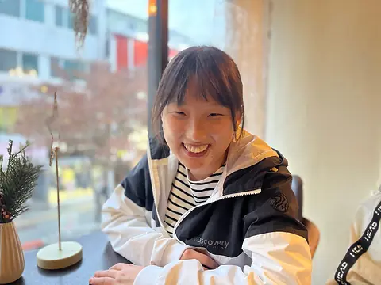

짱구 소품 하나에 담은,내 첫 세상의 시작


예림원 자치회장차경화
안녕하세요, 예림원에서 멋진 독립을 시작하는 차경화입니다.
2012년 3월 1일, 예림원에 처음 왔던 날이 어느덧 14년 8개월 전 일이 되었습니다. 모든 것이 낯설고 두렵기만 했던 저를 환한 미소와 따뜻한 품으로 맞아 주던 온기가 아직도 사진처럼 선명하게 가슴에 남아 있습니다.
2014년 2월 7일에는 자립이 무엇인지도 모른 채, 그저 좋아하는 언니들과 함께 지낸다는 생각에 설레며 체험홈 생활을 시작하게 되었습니다. 체험홈에서 보낸 12년 8개월을 돌아보면 힘든 일보다는 즐거운 추억들이 참 많습니다. 내 손으로 처음 라면을 끓여봤던 일, 버스를 잘못 타서 모르는 곳에 갔다가 겨우 택시를 타고 돌아왔던 일, 아래층 아저씨가 찾아올 만큼 쿵쿵거리며 뛰어놀던 기억도 이제는 미소 지을 수 있는 추억이 되었습니다. 대전으로 한화 야구 경기를 보러 가고, 난생처음 일본으로 해외여행을 다녀왔던 설렘도 잊을 수 없습니다.
처음에는 그저 친구들과 어울려 신나게 자취하는 것만 같았습니다. 하지만 외부에 있는 체험홈에서 혼자 생활하는 연습을 해보고, 먼저 홀로서기에 성공한 선배들의 이야기를 들으면서 비로소 진짜 혼자 살아간다는 것의 의미를 깨닫게 되었습니다. 나만의 보금자리를 갖는다는 것은 오늘 저녁 메뉴를 정하는 소소한 결정부터 내 삶의 방향을 정하는 것까지, 모든 것을 스스로 선택하고 그만큼 책임져야 한다는 뜻이었습니다.
처음엔 무섭기도 했던 혼자만의 시작이 이제는 기대와 설렘으로 가득 차 있습니다. 앞으로 입주할 내 집에서 가장 해보고 싶은 건 친구들과 이모, 엄마를 초대해 늦게까지 수다를 떨고 자고 가게 하는 것입니다. 내가 제일 좋아하는 '짱구' 캐릭터 소품들로 나만의 방을 아기자기하게 꾸밀 생각에 벌써부터 마음이 부풉니다.
예림원은 저에게 단순한 울타리가 아니었습니다. 늘 어버이 같은 마음으로 저를 든든하게 지켜주시고 아낌없는 사랑으로 바른 길을 안내해 주셨기에 저는 내 손으로 따뜻한 밥 한 끼를 만들어 먹는 법부터 주저 없이 당당하게 세상으로 나아가는 용기까지 배울 수 있었습니다.
저에게 홀로서기라는 꿈과 세상을 향해 나아갈 용기를 준 장영순 대표이사님과 예림원의 모든 분께 감사드리며, 나만의 공간에서 제 삶을 멋지게 가꾸어 나갈 저의 첫걸음을 따뜻하게 응원해 주세요.
※ 본 글은 차경화 님의 인터뷰를 바탕으로 재구성하였습니다.